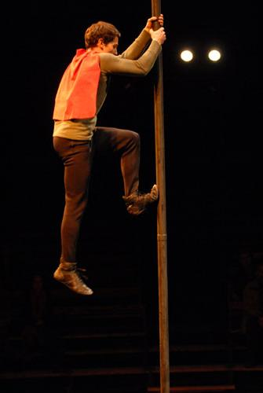

The chinese pole
David Gus will be presenting a number of chinese pole. This artist began at eight years old at the great Circus school of "Tartempion". This incredible number requires a lof of rigor and work.
The chinese pole is a more or less long bar or the artist does his prowess.
